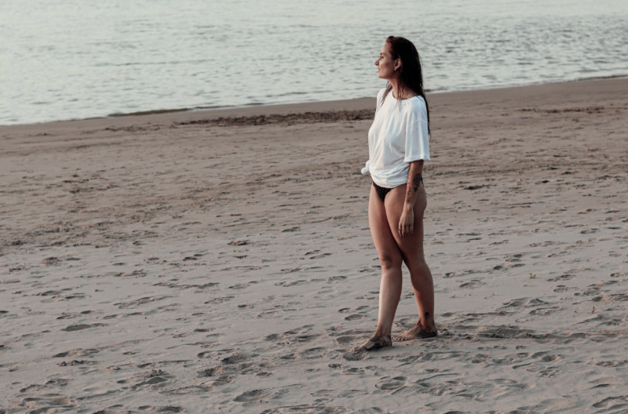

Persoonlijk
Knuffel de herfst
september 25, 2020
Oké eerlijk is eerlijk, ik heb toch nog best genoten van de nazomer vorige week. Ik had een fotoshoot geplant staan met Sanne van Schaik en wat in eerste instantie een herfst-fotoshoot moest worden viel die (letterlijk) in het water met 30 graden. “Dan moeten we het er maar van nemen en gaan we het water in” zei ik en met het zand tussen mijn tenen en het geklots van het waal water tegen de stenen realiseerde ik me dat ik daar deze zomer veelste weinig van genoten had.
Deze zomer overviel ik door mijn eigen sombere gedachtes en hoewel ik alles altijd met humor bestrijd vond ik het daardoor extra moeilijk om uit te leggen hoe somber ik me heb gevoelt tijdens die warme zomerdagen. Ik wist niet eerder van het bestaan van een zomerdepressie af maar inmiddels heb ik ervaren hoe dat voelt. En mijn angst voor wespen weerhoudt me er van om écht dingen te ondernemen in de maanden juli/augustus. Wat er dus niet voor zorgt dat ik me veel beter ben gaan voelen. Zonde want door weer één te zijn met het water merkte ik weer hoe erg ik dat gemist had.
De volgende (tevens ook laatste) na-zomerdag was ik dan ook direct op het strand te vinden. Samen met mijn goede vriend Jim en Pip lagen we op handdoeken met een zelf gestookt kampvuurtje marshmallows te roosteren terwijl je de zon langzaam achter de Waalbrug zag verdwijnen. Verdomme zeg, wat was dat fijn.
En toen werd het eindelijk 22 september, de herfst is begonnen. Weliswaar met nog wat hoge herfst temperaturen zien de vooruitzichten er nu wel echt naar uit dat we weer jassen aan kunnen, kunnen genieten van de knisperende bladeren onder je schoenen, pompoenen kunnen eten alsof ons leven er vanaf hangt en weer met een dekentje en een warme kop thee op de bank kunnen kruipen.
Knuffel de herfst is een quote die ik stiekem gestolen heb van The Body Shop toen ik hun nieuwe pumpkin lijn ging bekijken. Want wat ben ik gelukkig met merken die de pumpkin hype van Amerika overnemen. Ik kan niet wachten tot een shitload aan pumpkin spice home-made-latte’s, geurkaarsen, verse thee, homesprays en parfums.
Ik hou van seizoenen, de kleuren van de herfst, de charmes van de winter, de ochtendzon van de lente en zelfs de ellende lange maar zolang ik in het water lig best wel oké zomer.
Maar herfst, ik ben blij dat je er bent.